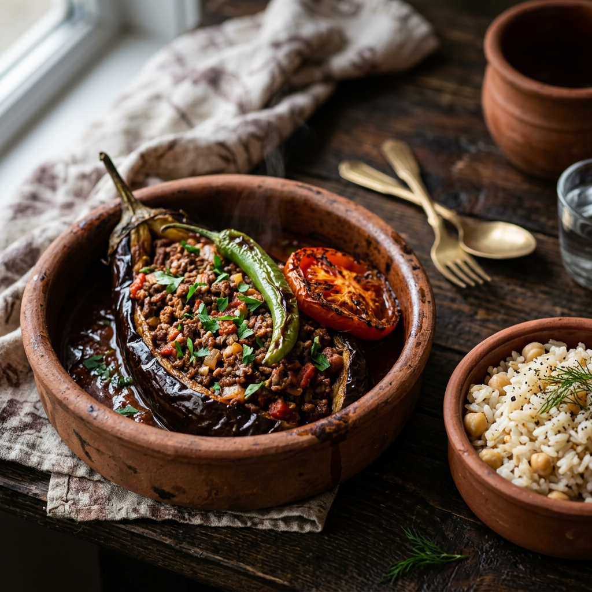

Turkish Stuffed Eggplant (Karnıyarık)

Karnıyarık is one of the most beloved dishes in Turkish home cooking. Its name refers to the slit made in the eggplants, which are then filled with a savory mixture of meat and vegetables. Traditionally, eggplants are fried, but here they are roasted for a lighter version that maintains all the classic flavors.
Ingredients
- 4 medium globe eggplants (partially peeled in stripes)
- ¬Ω lb (225g) ground beef or lamb
- 1 medium yellow onion (finely chopped)
- 2 cloves garlic (minced)
- 2 medium tomatoes (diced)
- 1 tablespoon Turkish pepper paste (biber salçası) - (Sub: tomato paste)
- Extra virgin olive oil (2 tbsp for roasting, 2 tbsp for the filling)
- 1 teaspoon salt & ¬Ω teaspoon black pepper
- ¬Ω teaspoon cumin (recommended)
- ¬Ω teaspoon paprika (optional)
- ¬Ω cup fresh parsley (chopped, plus more for garnish)
- 2 green bell peppers and sliced tomatoes (for garnish)
- 2 cups vegetable broth
Instructions
- Prepare the eggplants: Partially peel the eggplants in a 'zebra' stripe pattern. Soak in salted water for 15 minutes to remove bitterness, then pat dry thoroughly.
- Roast for a lighter version: Brush the eggplants with olive oil and roast at 400°F (200°C) until softened (about 20 minutes).
- Prepare the filling: Heat olive oil in a skillet and sauté onions and garlic. Add ground meat and cook until browned.
- Meld the flavors: Stir in diced tomatoes, pepper paste, and seasonings. Simmer until the tomatoes break down and the mixture thickens. Stir in the chopped parsley.
- Create a pocket: Make a lengthwise slit in each eggplant. Gently press the center of each to create a pocket for the filling.
- Baking: Stuff the meat mixture into the eggplants. Place in a baking dish, pour broth around them, and garnish with sliced tomatoes and peppers. Bake at 375°F (190°C) for 20 minutes until heated through and flavors meld.
- Serving: Serve warm with traditional Turkish rice pilaf (şehriyeli pilav).
Community & Discussion
Have a question or a variation of this dish? Join the discussion below!